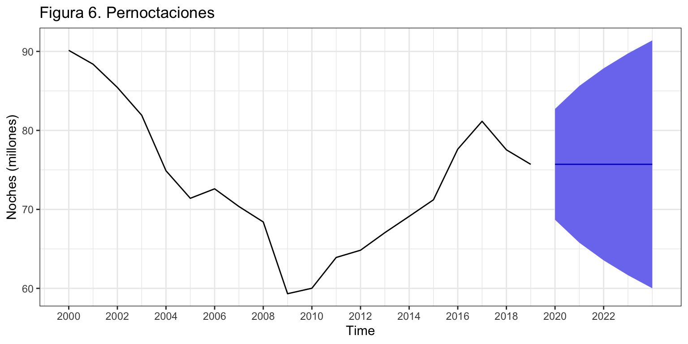

Pernoctaciones en alojamientos turísticos de turistas extranjeros
Procesos ARIMA (sin estacionalidad)
Iván Arribas (Depto. Análisis Económico. Universitat de València)
1 Introducción
Consideremos de nuevo la serie temporal correspondiente al número de pernoctaciones que los turistas extranjeros realizan en España en alojamientos turísticos autorizados (que llamaremos Pernoctaciones en adelante). Esta serie está disponible en Eurostat desde enero de 2000 hasta diciembre de 2019, un total de 20 años y 240 observaciones.
Para su análisis por modelos ARIMA sin estacionalidad vamos a anualizarla (20 años) y a dividirla por un millón para cambiar las unidades.
Pernoctaciones <- read.csv2("./series/Pernoctaciones.csv", header = TRUE)
Pernoctaciones <- ts(Pernoctaciones[,2], start = 2000, frequency = 12)
Pernoctaciones <- aggregate(Pernoctaciones/10^6, FUN = sum)
autoplot(Pernoctaciones,
xlab = "",
ylab = "Noches (millones)",
main = "Figura 1. Pernoctaciones") +
scale_x_continuous(breaks= seq(2000, 2020, 2)) 
2 Transformación de la serie
La figura 2 muestra usa serie con tendencia. Sin embargo, vimos que el modelo de alisado que mejor ajustaba a los datos era un modelo sin tendencia y, además, la función ndiffs (que realiza un contraste formal de estacionariedad) también indica que la serie es estacionaria.
Ante esta situación se opta por explorar ambas opciones. Es decir, analizaremos la serie \(Pernoctaciones \sim I(0)\) así como la serie \(Pernoctaciones \sim I(1)\) y veremos cual de las dos nos ofrece mejores predicciones.
autoplot(Pernoctaciones, xlab = "Serie original", ylab = "", main = "")
autoplot(diff(Pernoctaciones), xlab = "Serie diferenciada", ylab = "", main = "")
ggAcf(Pernoctaciones, xlab = "", ylab = "FAC", main = "")
ggAcf(diff(Pernoctaciones), xlab = "", ylab = "FAC", main = "")
ndiffs(Pernoctaciones)[1] 0
3 Análisis de la serie Pernoctaciones \(\sim I(0)\)
En este epígrafe asumiremos que la serie Pernoctaciones es estacionaria.
3.1 Identificación
Vamos a identificar los valores de \(p\) y \(q\) a partir de auto.arima.
auto.arima(Pernoctaciones, d = 0)Series: Pernoctaciones
ARIMA(2,0,0) with non-zero mean
Coefficients:
ar1 ar2 mean
1.3559 -0.4894 75.6030
s.e. 0.1874 0.2004 5.1908
sigma^2 estimated as 12.45: log likelihood=-53.13
AIC=114.25 AICc=116.92 BIC=118.24Se identifica un proceso ARIMA(2, 0, 0) con constante. La estimación de este modelo muestra que los dos coeficientes estimados son aparentemente significativos y el análisis del error revela un valor que supera las 2.5 desviaciones típicas en el año 2009 (figura 3).
arima200 <- Arima(Pernoctaciones,
order = c(2, 0, 0),
include.constant = TRUE)
error <- residuals(arima200)
sderror <- sd(error)
autoplot(error, series="Error",
colour = "black",
xlab = "",
ylab = "Error",
main = "Figura 3. Error + Intervención") +
geom_hline(yintercept = c(-3, -2, 2, 3)*sderror,
colour = c("red", "green", "green", "red"),
lty = 2) +
geom_point() +
scale_x_continuous(breaks= seq(2000, 2020, 2)) 
Creamos una variable ficticia para el año 2009 y la incluimos en el modelo. Ahora ya no se identifican más valores atípicos (figura 4).
d2009 <- 1*(time(Pernoctaciones) == 2009)
arima200 <- Arima(Pernoctaciones,
order = c(2, 0, 0),
include.constant = TRUE,
xreg = d2009)
arima200Series: Pernoctaciones
Regression with ARIMA(2,0,0) errors
Coefficients:
ar1 ar2 intercept xreg
1.4486 -0.5742 75.5041 -3.9615
s.e. 0.1749 0.1885 4.8489 1.5168
sigma^2 estimated as 9.794: log likelihood=-50.3
AIC=110.61 AICc=114.89 BIC=115.58error <- residuals(arima200)
sderror <- sd(error)
autoplot(error, series="Error",
colour = "black",
xlab = "",
ylab = "Error",
main = "Figura 4. Error + Intervención") +
geom_hline(yintercept = c(-3, -2, 2, 3)*sderror,
colour = c("red", "green", "green", "red"),
lty = 2) +
geom_point() +
scale_x_continuous(breaks= seq(2000, 2020, 2)) 
3.2 Validación
Variables son significativas
Todos dos coeficientes estimados (\(\phi_1\), \(\phi_2\), \(\mu\) y \(\gamma_{d2009}\)) son significativos.
# H0: phi1 = 0
wald.test(b = coef(arima200), Sigma = vcov(arima200), Terms = 1)Wald test:
----------
Chi-squared test:
X2 = 68.6, df = 1, P(> X2) = 0.00000000000000011# H0: phi2 = 0
wald.test(b = coef(arima200), Sigma = vcov(arima200), Terms = 2)Wald test:
----------
Chi-squared test:
X2 = 9.3, df = 1, P(> X2) = 0.0023# H0: constante = 0
wald.test(b = coef(arima200), Sigma = vcov(arima200), Terms = 3)Wald test:
----------
Chi-squared test:
X2 = 242.5, df = 1, P(> X2) = 0.0# H0: d2009 = 0
wald.test(b = coef(arima200), Sigma = vcov(arima200), Terms = 4)Wald test:
----------
Chi-squared test:
X2 = 6.8, df = 1, P(> X2) = 0.009
Medidas de error
El error medio es 3 millones de pernoctaciones (RMSE) y el error porcentual medio es 3% (MAPE).
accuracy(arima200) ME RMSE MAE MPE MAPE MASE ACF1
Training set -0.38 2.8 2.12 -0.66 2.96 0.66 -0.1Error de previsión extra-muestral según horizonte temporal
Asumimos que se precisan diez años para hacer una buena estimación, \(k=10\), y que el horizonte temporal es tres años vista, \(h = 3\).
k <- 10
h <- 3
T <- length(Pernoctaciones)
s <- T - k - h
mapeArima200 <- matrix(NA, s + 1, h)
X <- data.frame(d2009)
for (i in 0:s) {
train.set <- subset(Pernoctaciones, start = i + 1, end = i + k)
test.set <- subset(Pernoctaciones, start = i + k + 1, end = i + k + h)
X.train <- data.frame(X[(i + 1):(i + k),])
hay <- colSums(X.train)
X.train <- X.train[, hay>0]
X.test <- data.frame(X[(i + k + 1):(i + k + h),])
X.test <- X.test[, hay>0]
if (length(X.train) > 0) {
fit <- Arima(train.set,
order = c(2, 0, 0),
include.constant = TRUE,
xreg=as.matrix(X.train))
} else {
fit <- Arima(train.set,
include.constant = TRUE,
order = c(2, 0, 0))
}
if (length(X.train) > 0)
fcast <- forecast(fit, h = h, xreg = as.matrix(X.test)) else
fcast <- forecast(fit, h = h)
mapeArima200[i + 1,] <- 100*abs(test.set - fcast$mean)/test.set
}
mapeArima200 <- colMeans(mapeArima200, na.rm = TRUE)
mapeArima200[1] 5.872216 7.925378 10.221521Si bien el error de previsión a uno o dos periodos vista se mantiene razonablemente bajo, para previsiones a 3 años vista alcanza el 10%. Además, que el error de previsión extra-muestral a un periodo vista es tres puntos porcentuales superior al error intra-muestral.
4 Análisis de la serie Pernoctaciones \(\sim I(1)\)
En este epígrafe asumiremos que la serie Pernoctaciones no es estacionaria, pero su primera diferencia sí es estacionaria.
4.1 Identificación
Identificaremos los valores de \(p\) y \(q\) a partir de auto.arima.
auto.arima(Pernoctaciones, d = 1)Series: Pernoctaciones
ARIMA(0,1,0)
sigma^2 estimated as 14.66: log likelihood=-52.47
AIC=106.94 AICc=107.18 BIC=107.89Se identifica un proceso ARIMA(0, 1, 0) sin deriva, es decir un paseo aleatorio o método Ingenuo I. Tras estimar el modelo, el análisis del error revela de nuevo el año 2009 como atípico (figura 5) y significativo
arima010 <- Arima(Pernoctaciones,
order = c(0, 1, 0),
include.constant = FALSE)
error <- residuals(arima010)
sderror <- sd(error)
autoplot(error, series="Error",
colour = "black",
xlab = "",
ylab = "Error",
main = "Figura 5. Error + Intervención") +
geom_hline(yintercept = c(-3, -2, 2, 3)*sderror,
colour = c("red", "green", "green", "red"),
lty = 2) +
geom_point() +
scale_x_continuous(breaks= seq(2000, 2020, 2))
arima010 <- Arima(Pernoctaciones,
order = c(0, 1, 0),
include.constant = FALSE,
xreg = d2009)
arima010Series: Pernoctaciones
Regression with ARIMA(0,1,0) errors
Coefficients:
xreg
-4.8894
s.e. 2.4644
sigma^2 estimated as 12.82: log likelihood=-50.68
AIC=105.36 AICc=106.11 BIC=107.25wald.test(b = coef(arima010), Sigma = vcov(arima010), Terms = 1)Wald test:
----------
Chi-squared test:
X2 = 3.9, df = 1, P(> X2) = 0.047
4.2 Validación
Medidas de error
El error medio es 3.4 pernoctaciones (RMSE) y el error porcentual medio es 4.11% (MAPE). El modelo muestra algo de sesgo en las predicciones (mayores que el dato real) y los intervalos de confianza de las predicciones no son válidos.
accuracy(arima010) ME RMSE MAE MPE MAPE MASE ACF1
Training set -0.72 3.4 2.96 -1 4.11 0.93 0.48Error de previsión extra-muestral según horizonte temporal
Asumimos que se precisan diez años para hacer una buena estimación, \(k=10\), y que el horizonte temporal es tres años vista, \(h = 3\).
k <- 10
h <- 3
T <- length(Pernoctaciones)
s <- T - k - h
mapeArima010 <- matrix(NA, s + 1, h)
X <- data.frame(d2009)
for (i in 0:s) {
train.set <- subset(Pernoctaciones, start = i + 1, end = i + k)
test.set <- subset(Pernoctaciones, start = i + k + 1, end = i + k + h)
X.train <- data.frame(X[(i + 1):(i + k),])
hay <- colSums(X.train)
X.train <- X.train[, hay>0]
X.test <- data.frame(X[(i + k + 1):(i + k + h),])
X.test <- X.test[, hay>0]
if (length(X.train) > 0) {
fit <- Arima(train.set,
order = c(0, 1, 0),
xreg=as.matrix(X.train))
} else {
fit <- Arima(train.set,
order = c(0, 1, 0))
}
if (length(X.train) > 0)
fcast <- forecast(fit, h = h, xreg = as.matrix(X.test)) else
fcast <- forecast(fit, h = h)
mapeArima010[i + 1,] <- 100*abs(test.set - fcast$mean)/test.set
}
mapeArima010 <- colMeans(mapeArima010, na.rm = TRUE)
mapeArima010[1] 5.418211 6.812948 8.956785El error de previsión varia entre el 5.4% a un periodo vista y el 9% a tres periodos vista.
5 Comparativa entre modelos
Si atendemos a los indicadores de calidad de ajuste de ambos modelos, todos apuntan al proceso ARIMA(2, 0, 0) como el que mejor ajusta a los datos. El error medio (RMSE) para ARIMA(2, 0, 0) es seiscientas mil pernoctaciones menor que para ARIMA(0, 1, 0) y el error relativo es más de un punto porcentual menor. Además, el modelo ARIMA(2, 0, 0) tiene menos sesgo en las predicciones y mejores intervalos de confianza que el modelo ARIMA(0, 1, 0).
accuracy(arima200) ME RMSE MAE MPE MAPE MASE ACF1
Training set -0.38 2.8 2.12 -0.66 2.96 0.66 -0.1accuracy(arima010) ME RMSE MAE MPE MAPE MASE ACF1
Training set -0.72 3.4 2.96 -1 4.11 0.93 0.48Por el contrario, si atendemos a los errores de previsión extra-muestrales, el mejor proceso es ARIMA(0,1,0).
mapeArima200[1] 5.87 7.93 10.22mapeArima010[1] 5.42 6.81 8.96Otro ejemplo más en el que mejor ajuste no implica mejor predicción. En este caso el modelo AR(2) sobreajusta (overfitting) los datos y genera peores predicciones a corto y medio plazo.
Concluimos que el mejor modelo con propósitos predictivos es \(Pernoctaciones \sim ARIMA(0, 1, 0) + AI\).
Nota: Es la tercera vez que el método Ingenuo I (paseo aleatorio) aparece como el más adecuado para predecir la serie anual de pernoctaciones. Era el mejor de entre los métodos simples. Al elegir dentro de la familia de Alisado Exponencial, también fue el mejor. Ahora, es el proceso ARIMA más adecuado. Para esta serie, que es corta y aparentemente sencilla, ninguna aproximación compleja mejora el método Ingenuo I, más fácil de obtener e interpretar.
6 Interpretación del modelo
El proceso es un paseo aleatorio (ingenuo I) \(Pernoctaciones \sim ARIMA(0, 1, 0) + AI\): \[(1 - L) Pernoctaciones_t = \gamma \cdot d2009 + \varepsilon_t\] o \[Pernoctaciones_t = Pernoctaciones_{t-1} + \gamma \cdot d2009 + \varepsilon_t.\] El modelo estimado queda: \[\widehat{Pernoctaciones}_t = Pernoctaciones_{t-1} - 4.89 \cdot d2009.\] Cada año el número de pernoctaciones previsto es el mismo que el del año previo. En 2009 hubo una caída en las pernoctaciones de 4.5 millones, debido a la Gran Recesión.
7 Predicción
Podemos usar el modelo estimado para predecir las pernoctaciones para los próximos 5 años.
parima010 <- forecast(arima010,
h = 5,
level = 95,
xreg = rep(0, 5))
parima010 Point Forecast Lo 95 Hi 95
2020 75.70578 68.68752 82.72404
2021 75.70578 65.78046 85.63110
2022 75.70578 63.54979 87.86176
2023 75.70578 61.66926 89.74230
2024 75.70578 60.01247 91.39908autoplot(parima010,
ylab = "Noches (millones)",
main = "Figura 6. Pernoctaciones") +
scale_x_continuous(breaks= seq(2000, 2022, 2)) 